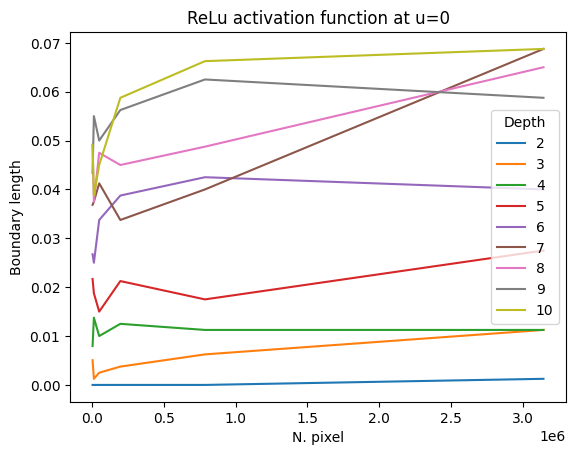
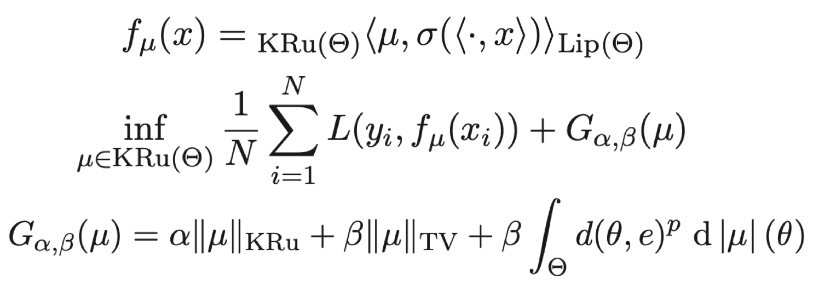
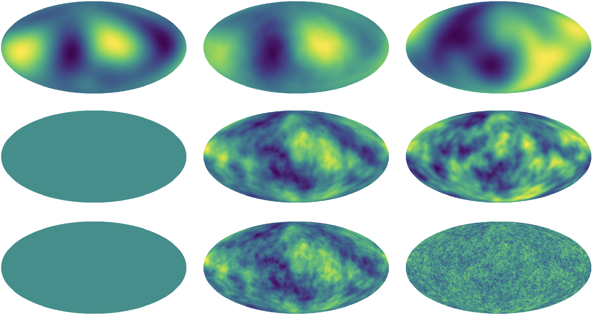
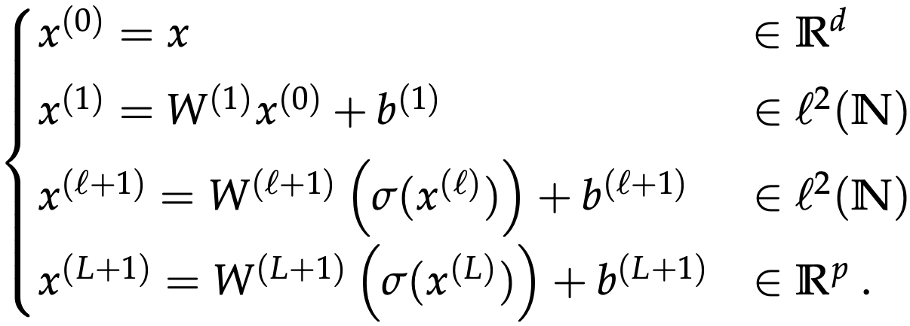
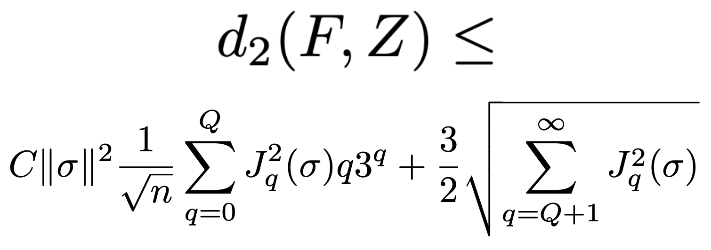
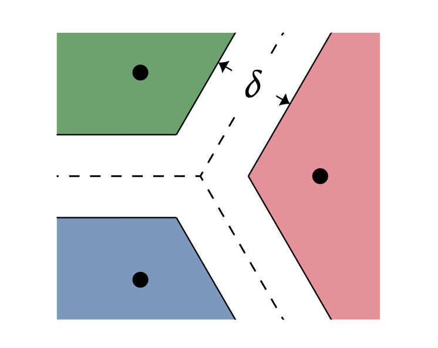
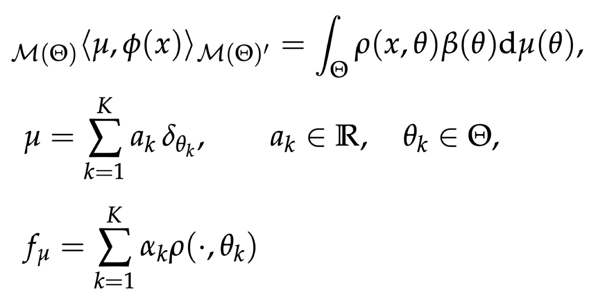
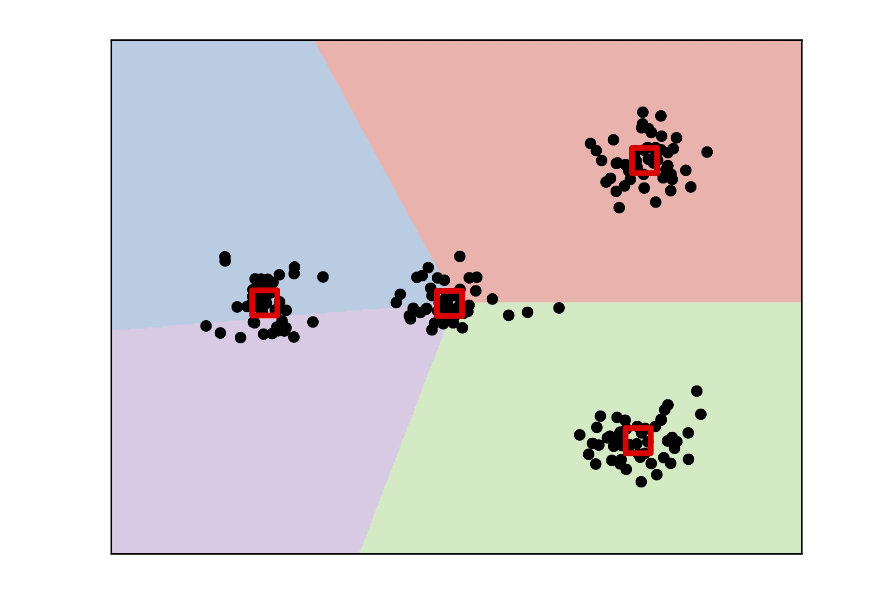
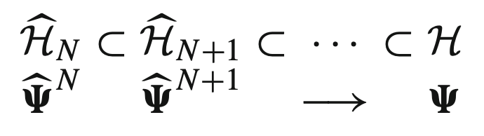
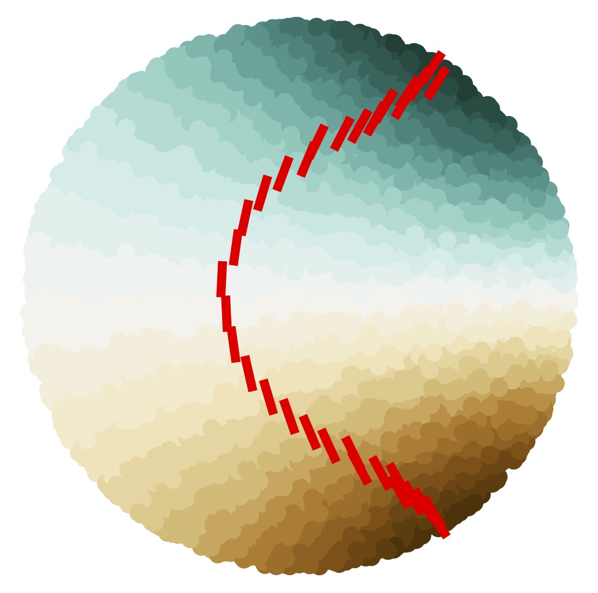

Teaching
Fall 2025
- Statistica [CFU 6] (CdLM in Biologia Ambientale)
Spring 2026
- Statistical Learning [CFU 8] (CdLM in Matematica Pura ed Applicata)

S Di Lillo, D Marinucci, M Salvi, S Vigogna

F Bartolucci, M Carioni, J A Iglesias, Y Korolev, E Naldi, S Vigogna

S Di Lillo, D Marinucci, M Salvi, S Vigogna

F Bartolucci, E De Vito, L Rosasco, S Vigogna

V Cammarota, D Marinucci, M Salvi, S Vigogna

S Vigogna, G Meanti, E De Vito, L Rosasco

F Bartolucci, E De Vito, L Rosasco, S Vigogna

L Carratino, S Vigogna, D Calandriello, L Rosasco

E De Vito, Z Kereta, V Naumova, L Rosasco, S Vigogna

T Klock, A Lanteri, S Vigogna
